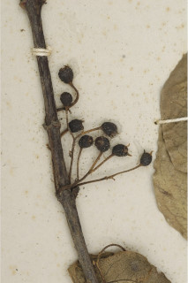
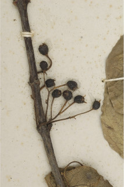

| Leaves : | Leaves simple , opposite , decussate , sometimes appears to be in clusters of 2 on stout arrested branchlets ; stipules linear - subulate with broad base, to 0.4 cm long; petiole slender, 0.7-1.9 cm long, planoconvex in cross section, glabrous ; lamina 2-5 x 1.4-2.9 cm, elliptic or ovate , apex acuminate with blunt tip, base acute to attenuate , margin entire , chartaceous , glabrous ; midrib flat above or thinly raised; secondary_nerves 4-6 pairs, slender, hairy domatia at axils; tertiary_nerves reticulate , sometimes obscure . |
 
